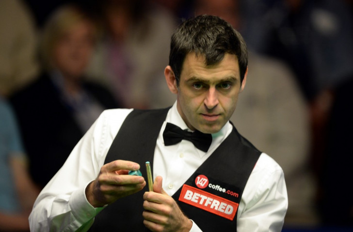
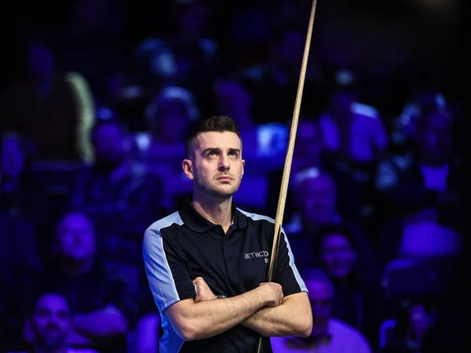
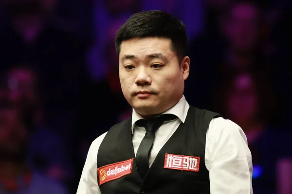
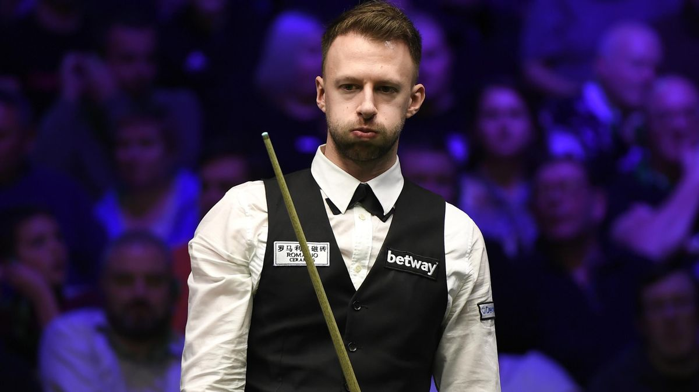
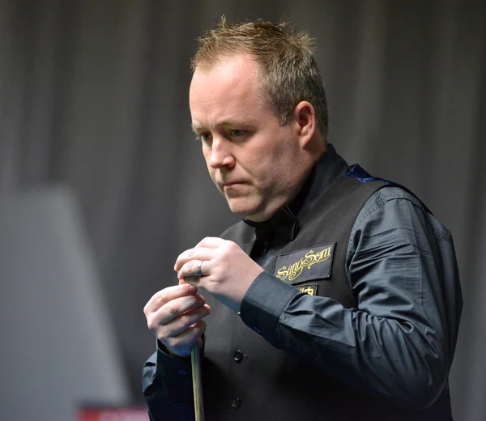

Ronnie O'Sullivan
Ronald Antonio O'Sullivan OBE (born 5 December 1975) is an English professional snooker player who is the current world champion and world number one. Widely recognised as one of the most talented and accomplished players in the sport's history, he has won the World Snooker Championship seven times, a modern-era record he holds jointly with Stephen Hendry. He has also won a record seven Masters and a record seven UK Championship titles for a total of 21 Triple Crown titles, the most achieved by any player.
Mark Selby
Mark Anthony Selby MBE (born 19 June 1983) is an English professional snooker player, who is a four-time World Snooker Champion. Ranked world number one on multiple occasions, he has won a total of 21 ranking titles, placing him eighth on the all-time list of ranking tournament winners.
Ding JunHui
Ding Junhui is a Chinese professional snooker player. He is the most successful Asian player in the history of the sport. Throughout his career, he has won 14 major ranking titles, including three UK Championships. He has twice reached the final of the Masters, winning once in 2011. In 2016, he became the first Asian player to reach the final of the World Championship.
Judd Trump
Judd Trump MBE is an English professional snooker player who is a former world champion and former world number one. Widely regarded as one of the sport's most talented players, he is currently sixth on the list of all-time ranking event winners, with 23 ranking titles. He has also won four Triple Crown titles.
John Higgins
John Higgins, MBE is a Scottish professional snooker player. He has won 31 career ranking titles, placing him in third position on the all-time list of ranking event winners, behind Ronnie O'Sullivan and Stephen Hendry .
